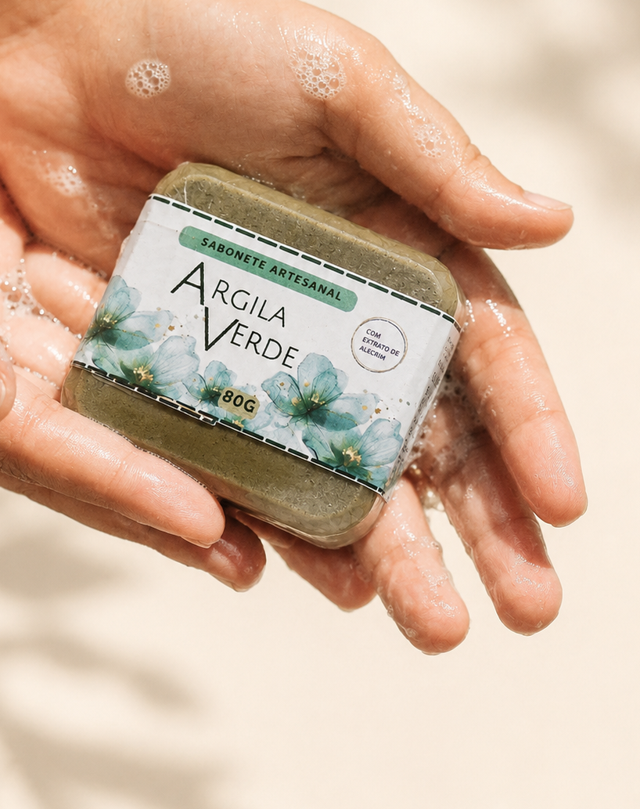

Natureza que cuida de você todos os dias.
Sabonetes artesanais feitos com ingredientes naturais e aromas delicados para transformar seu banho em um ritual de autocuidado.
Conhecer coleção
Sabonetes artesanais feitos com ingredientes naturais e aromas delicados para transformar seu banho em um ritual de autocuidado.
Conhecer coleção
Selecionamos cuidadosamente ingredientes especiais para proporcionar uma experiência acolhedora.
Cada sabonete é produzido com carinho, atenção aos detalhes e muito cuidado.
Transforme sua rotina em um momento de bem-estar e leveza.